7210A35 R.R. FRONT SIDE PANEL (assembly)
- Path
- Procedures > 72 PANELS AND FRAME > 7210 REMOVING REFITTING > 7210A structural elements (front part) > 7210A35 R.R. FRONT SIDE PANEL (assembly)
- Kind
- repair procedure (removal / refitting; the operation number is the code)
- Applies to
- all engines; all production periods
- Interactive page
- https://sloeber94.github.io/elrnDB-a156/en/#/3239026
Applies to: all engines; all production periods
 Removing
Removing
 Refitting
Refitting7210A16 R.R. WING LOWER CROSSMEMBER .
Remove fouling parts from the dashboard cross piece trim.
Remove the facia trim crossmember.
Raise the front part of the floor carpet.
Remove the engine bay service wiring.
Check if any of the connected parts are deformed by checking body alignment dimensions. Use appropriate measurement tools (reference rigs, templates or gauges).
Straighten the body if necessary.
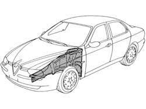
Applies to: all engines; all production periods
Use a rotary brush to clean the panel edges in order to expose the weld spots.
1. Use a chamfering machine to remove the weld spots shown in the figure.
2. Drill out the spot welds shown in the figure.
3. Remove upper bracket (3a) and lower bracket (3b) inside the engine bay.
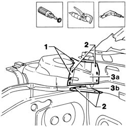
Applies to: all engines; all production periods
1. Use a pneumatic saw to cut along the lines shown in the figure.
2. Cross-section of key area as a guide to allow the operator to adjust cutting position and depth in order to avoid damage to the underlying panels.
3. Remove the front side panel cut edge.
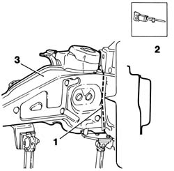
Applies to: all engines; all production periods
1. Drill out the weld spots.
2. Use a chamfering machine to remove the weld spots.
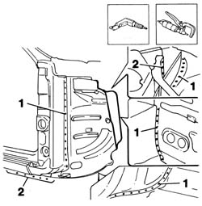
Applies to: all engines; all production periods
1. Drill out the weld spots.
2. Use a chamfering machine to remove the weld spots.
3. Remove the front side panel cut edge.
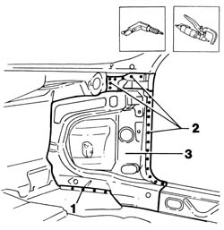
Applies to: all engines; all production periods
1. Make equidistant holes as shown in the figure.
2. Straighten the panel edges using a mallet and profiled stake.
Use a grinding wheel to remove the weld spot residues.
Apply electric weld paint finish to newly-treated edges.
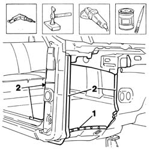
Applies to: all engines; all production periods
1. Make equidistant holes as shown in the figure.
Use a rotary brush to remove the corrosion-proofing from the areas shown in the figure.
2. Apply electroweldable paint finish to the panel edges shown in the figure.
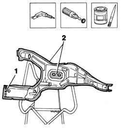
Applies to: all engines; all production periods
Refitting
Removing1. Position the inner panel correctly on the car using a template and self-locking clips.
Check it is properly aligned.
2. Use a spot welder to weld the areas shown in the figure.
3. Use a MIG welder to fill the holes made previously.
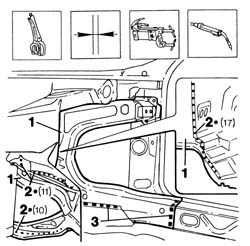
Applies to: all engines; all production periods
Use a rotary brush to clean the welded areas.
1. Apply electroweldable paint on the treated areas.
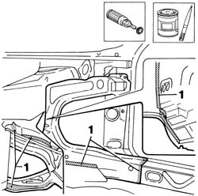
Applies to: all engines; all production periods
Use a rotary brush to remove the corrosion-proofing from the areas shown in the figure.
1. Apply electric weld paint finish to the newly-treated panel edges.
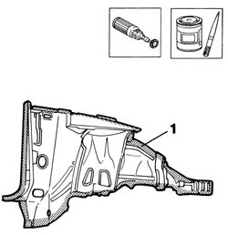
Applies to: all engines; all production periods
1. Position the outer panel correctly on the car using self-locking clips.
2. Use a spot welder to weld the areas shown in the figure.
3. Use a spot welder to weld the areas shown in the figure.
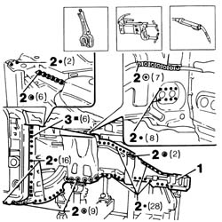
Applies to: all engines; all production periods
1. Continue spot welding inside the car.
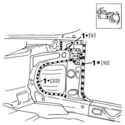
Applies to: all engines; all production periods
1. Make equidistant holes in the areas shown in the figure.
2. Working at the bench, remove the corrosion-proofing from the edges of the part.
Apply electroweldable paint to the treated areas.
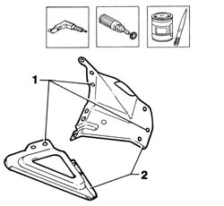
Applies to: all engines; all production periods
1. Position the part on the car and secure using self-locking grippers.
2. Use a MIG welder to fill the holes made previously.
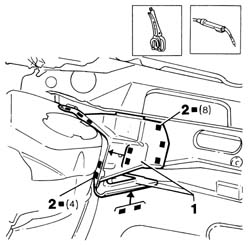
Applies to: all engines; all production periods
1. Correct any deformations in the panel using a profiled stake and mallet.
Use a grinding wheel to remove weld spot residues.
Use a rotary brush to clean the treated areas.
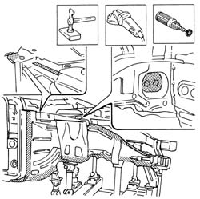
Applies to: all engines; all production periods
Apply rust-proofing treatment to the newly welded areas.
1. Seal the joint lines between the part and the car using sealant.
2. Reapply PVC treatment to the areas indicated in the figure.
3. Apply sound-deadening panels to the area shown in the figure.
4. Apply foam through the holes indicated.
Apply paint.
5. Apply wax oil inside the holes shown in the figure.
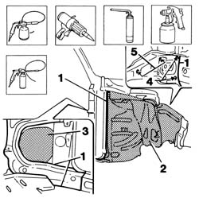
Applies to: all engines; all production periods